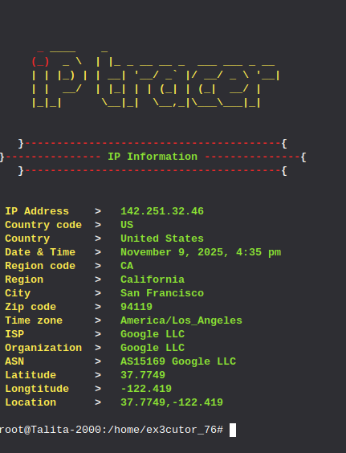
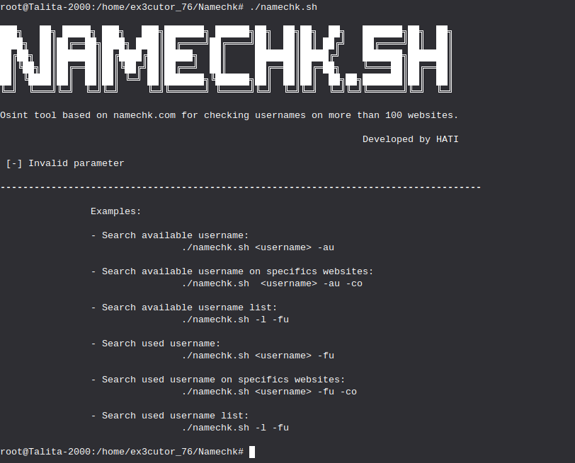
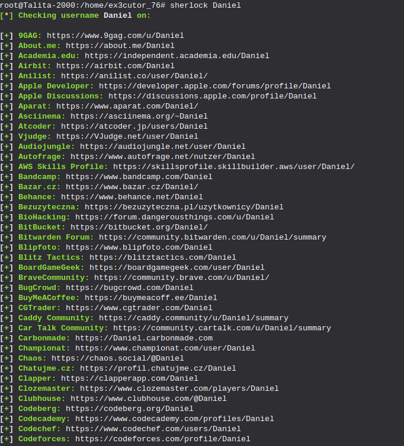

Investigar pessoas:

O IP-tracer é uma ferramenta para rastrear um IP e passar algumas informações, nessa imagem por exemplo
utilizei o IP-tracer para rastrear o IP do youtube, e bem claro mais um aviso: Não existe uma ferramenta que rastrea a localização exata
de um dispositivo ou IP, então saiba que esse longitude e latitude é apenas o mais próximo onde o provedor do IP está localizado.
Como instalar o IP-tracer:
Abra o terminal e use esse comando: apt update (Esse comando faz uma lista de atualização dos seus softwares instalados via apt além de
listar atualizações do sistema.)
Se caso você não tem o Git (Que no caso é impossível porque ele já vem instalado nas distros Linux) use: apt install git -y
Bem se caso você já tem ou já instalou use: git clone https://github.com/rajkumardusad/IP-Tracer.git
Entre no repositório: cd IP-Tracer
Após isso dê a permissão a esse software de ser usado no terminal ou como aplicativo com: chmod +x install
Agora para saber se realmente instalou use: sh install.
Se caso não funcionar ou se caso o seu foi igual o meu que foi bem diferente use: trace -m (Com esse comando ele mostra informações sobre seu IP)
Comando útil: trace -t (IP do alvo)
Com este comando você pode ver informações de um IP.

O Namechk é uma ferramenta que te permite buscar o nome de usuário, aqui na imagem por exemplo apenas utilizei ./namechk e ele
me mostrou algumas opções de comandos para usar.
Como instalar o Namechk:
Abra o terminal e clone o repositório git: git clone https://github.com/TheRipperJhon/namechk.git
Abra o repositório: cd namechk
Agora altere a permissão da ferramenta usando: chmod +x namechk.sh
Agora se você quiser usar use: ./namechk.sh -h (Com esse comando ele mostra os comandos que você pode usar.)

A ferramenta sherlock também é uma ótima ferramenta para buscar um nome de usuário, nesta imagem por exemplo
busquei o nome de um usuário com o nome de "Daniel" e isso me deu 278 resultados.
Como instalar o sherlock:
Abra o terminal e use: sudo apt install sherlock
Se caso quiser confirmar que o sherlock está instalado use: apt search sherlock
Como usar: sherlock (Nome de usuário)
E pronto ele irá mostrar uma lista de sites onde esse username foi encontrado.

O ghunt é uma ferramenta que pode te ajudar a pegar algumas informações sobre um email, claro que são poucas informações, entretanto,
será útil.
Como instalar o Ghunt:
Primeiro abra o terminal e digite esse comando: pip3 install pipx
Depois use esse comando: pipx ensurepath
Após isso use: pipx install ghunt
Agora para usar, use: ghunt login e use a extensão do ghunt para sincronizar (Recomendo usar o base64)
Agora se quiser saber mais comandos use: ghunt -h
Aviso: Sim é preciso do login para a ferramenta funcionar.